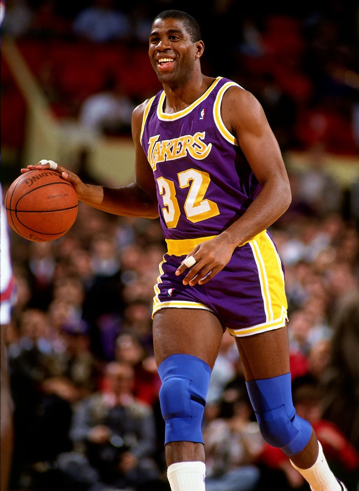
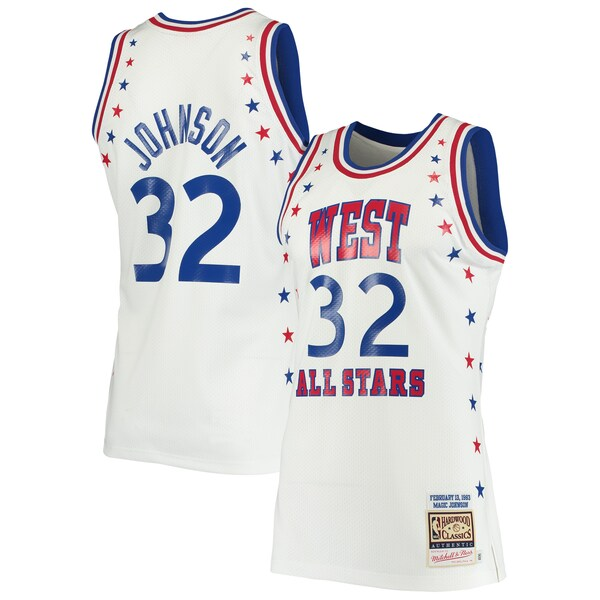

Earvin "Magic" Johnson
Earvin "Magic" Johnson, Jr. (Lansing, Míchigan; 14 de agosto de 1959) es un exbaloncestista estadounidense, considerado uno de los mejores de la historia. Militó en Los Angeles Lakers de la NBA desde 1979 hasta 1991, tiempo en que publicó que había contraído el virus de inmunodeficiencia humana, abandonando el deporte profesional para combatirlo, salvo por un breve período en 1996. Ese mismo año un grupo de miembros de medios de comunicación, exjugadores, entrenadores y mánagers generales, lo nombró como uno de los 50 mejores jugadores de la historia de la NBA y en 2002 ingresó al Basketball Hall of Fame.
NOTICIAS
FOTOS Y VIDEOS

COMPRAS


